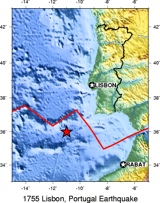
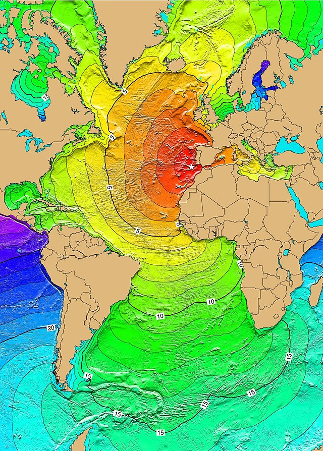
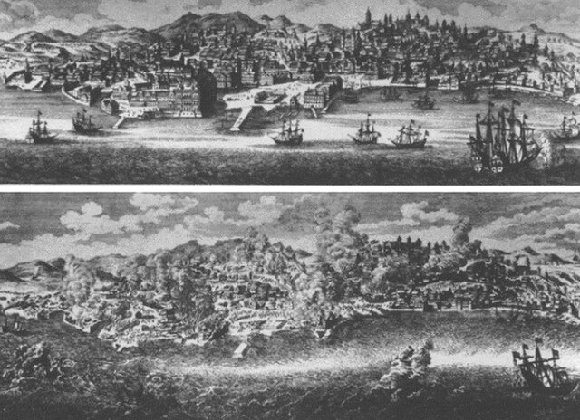
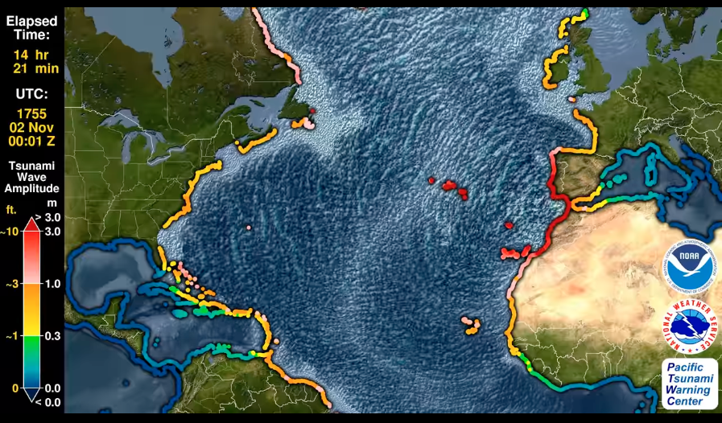
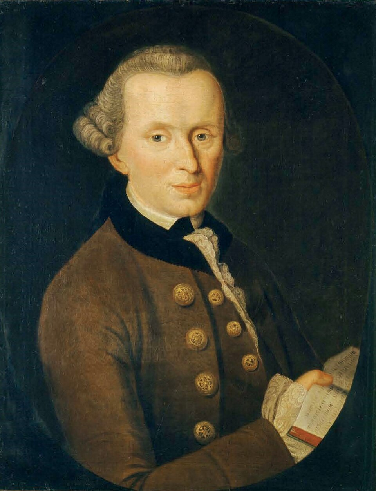
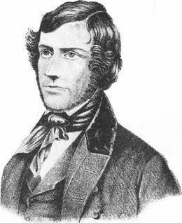

### 災害が科学に変わった瞬間 #### 〜1755年リスボン大震災を境に科学はどう変わったか？〜 <img src="assets/images/title.png" height="400px"> --- ### 自己紹介 <div class="profile-container"> <div class="profile-left"> * さめ(мег-сск) * ⚛️ VRChat物理学集会の主催 * 🧑🎓 社会人学生として通信制大学在学中 * 得意分野: * 📸 コンピュータビジョン (画像認識/点群処理) * 🌍 空間情報処理 (地理情報/リモートセンシング) * ☁️ クラウドインフラ設計/IaC (AWS, GCP) * [GitHub](https://github.com/s-sasaki-earthsea-wizard) * [YouTube](https://www.youtube.com/@SyotaSasaki-EW) * [Speaker Deck](https://speakerdeck.com/syotasasaki593876) </div> <div class="profile-right"> <img src="assets/images/icon_circle.png" alt="avatar" height="350px" width="350px"> </div> </div> --- ### 今日話すこと <div class="simple-box"> * 1755年リスボン大震災の概要 * 科学革命前夜の「観察の文化」 * 哲学者たち（カント、ミッチェル）の応答 * 実験的地震学の誕生 </div> <br> <div class="highlight-box"> * 「災害」が「科学」に変わった過程を追体験する </div> --- ## リスボン大震災とは？ --- ### リスボン大震災 <div class="simple-box"> * ポルトガルの首都リスボンを襲った大地震 * **発生日時**: 1755年11月1日 午前9時40分頃 * **震源**: 大西洋、サン・ヴィンセント岬沖 約220km </div> <div class="container"> <div class="col-left">  </div> <div class="col-right">  </div> </div> --- ### 被害想定 <div class="simple-box"> * **推定マグニチュード**: M8.5〜9 * **死者数**: 1万〜4万人（推定） * リスボン市内の建物の約85%が破壊 </div>  <div class="caption">被害前後のリスボン</div> --- ### 三重の災害 <div class="highlight-box"> 1. **地震**: 建物の倒壊（3回の大きな揺れ） 2. **津波**: 海水が一度引いた後、巨大な波が襲来 3. **火災**: 調理器具の転倒などにより市内各所で発生 </div> <img src="assets/images/640px-1755_Lisbon_earthquake.jpg" alt="1755年リスボン大震災の被害" height="360px"> <div class="caption">当時の被害を描いた銅版画。リスボン市立図書館収蔵</div> --- ### なぜこの地震が科学史を変えたのか？ <div class="simple-box"> * 🕯️ 万聖節(カトリックの祝日)の朝 — 敬虔な市民が教会でミサ中に被災 * ⛪ 教会が倒壊し、娼館が無傷だった矛盾 * ❓ 「なぜ神は善良な市民の街を破壊したのか？」 </div> <br> <div class="highlight-box"> * **神罰説** vs **自然現象としての科学的探求** の対立 * 地震という**自然災害を科学的に捉える**歴史的変遷 </div> --- ## 科学革命の準備 ### （1660-1754） --- ### 「神の怒り」から「観察可能な自然現象」へ <div class="simple-box"> * 🏛️ **1660年**: 英国王立協会設立 * モットー「Nullius in verba」（権威を鵜呑みにするな） * 組織的データ収集の始まり * 📖 **1665年**: *Philosophical Transactions* 創刊 * 地震報告の蓄積が始まる * 90年間で数百件の観察記録 </div> --- ### リスボン以前の重要な観察事例 <div class="highlight-box"> <table> <thead> <tr> <th>年代</th> <th>出来事</th> <th>意義</th> </tr> </thead> <tbody> <tr> <td>1692</td> <td>ジャマイカ・ポートロイヤル地震 (当時英国の植民地)</td> <td>「地震は山岳中心部から始まった」という観察</td> </tr> <tr> <td>1750</td> <td>ロンドン地震</td> <td>54件の報告がPhil. Trans.に掲載</td> </tr> </tbody> </table> </div> --- ### 理論の萌芽 <div class="simple-box"> * **1750年ロンドン地震の観察**: 地震の「軌道」概念 * 場所によって揺れの到達時刻・強度が異なる → 地震は「移動する現象」 * 現代の「震源からの地震波伝播」が経験則として認識 </div> <br> <div class="highlight-box"> * 💡 地震を科学的に解釈しようとする萌芽 </div> --- ## 1755年11月1日 --- ### ヨーロッパを揺るがした大地震 <div class="highlight-box"> * 🌍 **地震と津波の規模** * 津波がアゾレス諸島、西インド諸島に到達 * ヨーロッパ全域で揺れを観測 </div>  <div class="caption">Credit: NOAA</div> --- ### 二つの対照的な反応 <table> <thead> <tr> <th>神学的解釈</th> <th>科学的調査</th> </tr> </thead> <tbody> <tr> <td>Gabriel Malagrida (イエズス会宣教師)</td> <td>宰相・ポンバル侯爵カルヴァーリョ</td> </tr> <tr> <td>「市民の罪に対する神罰」</td> <td>科学的アンケート<br><small>「地震は何時に始まり、どれくらい続いたか？」<br>「海水は引いたか、満ちたか？高さはどの程度か？」<br>「建物の倒壊に方向性はあったか？」</small></td> </tr> </tbody> </table> <br> <div class="highlight-box"> * 同じ災害に対する**「なぜ」**と**「どのように」**の分岐点 </div> --- ### 耐震設計とその実証実験 <div class="simple-box"> * 耐震対策されたガイオラ構造で街を再建 * 兵士の行進で振動させる実験 * 耐震構造の**実証実験**の始まり * 災害対策に実験という**科学的手法の採用** </div> <img src="assets/images/Gaiola_pombalina.jpg" alt="Gaiola_pombalina" height="380px"> --- ## 哲学者・科学者たちの応答 ### （1756-1760） --- ### 1756年：カントの論文 <div class="simple-box"> * 📝 **3本の論文を短期間で発表** * 「最近頻発している地震の原因について」 * 「地震の原因に関する自然史と理論」 * 「地震に関する継続的考察」 </div>  --- ### カント「地震はただの自然現象」 <div class="highlight-box"> * 🤔 **カントの主張** * 地震は純粋に物理的・化学的現象 * 地下の硫黄と鉄の燃焼説 * 現代では否定された仮説だが、地震のメカニズムを科学現象として理解する試み * 神学的解釈を完全に排除 * 地震は神罰ではない、ただの自然現象 </div> <br> <div class="simple-box"> > 「自然法則に従う必然的現象であり、道徳的意味はない」 </div> --- ### 1759年：ミッチェルの革命 <div class="highlight-box"> * 🧑🔬 **ジョン・ミッチェル** (1724 - 1793) * 地震に関する論文を王立協会に提出 (1759) * 地震学の先駆けとして今日でも高い評価 * 翌年に会員に選出 </div>  --- ### ミッチェルの貢献 <div class="simple-box"> * 💡 **画期的な提案** 1. 地震は**波動**として伝播する 2. **震央・震源深度**の推定法 (幾何学的アプローチ) 3. 伝播速度の推定（約20マイル/分） 4. 津波は**海底地震**によって引き起こされる 5. **断層**（地層のずれ）と地震の関係を示唆 </div> --- ### データの力 <div class="simple-box"> * 📊 **科学的考察を可能にした下地** * 1750年ロンドン地震で「地震は移動する現象」という経験則 * *Phil. Trans.* の**100年分**の観察記録 * カルバーリョをはじめとするリスボン大地震の**大規模な体系的アンケート調査**（1756） * 🎯 リスボン大地震の震央を**大西洋上**と正確に推定 </div> <br> <div class="highlight-box"> * 💡 **データに基づいた科学的な地震研究の始まり** </div> --- ## 実験と測定の時代（1783-1855） ### This chapter is under construction... --- ### 1783年 カラブリア地震 (1783) <div class="simple-box"> * 推定マグニチュード7.0の地震がイタリア半島南部で発生 * 🏛️ ナポリ王立アカデミーの公式調査団派遣 * 🗺️ **William Hamilton**: 等震度線の萌芽 * 📊 **Giovanni Vivenzio**: 7段階被害分類 </div> --- ### 1828年 Egen：近代震度スケールの誕生 <div class="highlight-box"> * 📏 **6段階震度スケール**を提案 * 🎨 **色分け等震度線マップ**の作成 </div> --- ### ロバート・マレット: 地震学の父 <div class="simple-box"> * 💥 **実験的アプローチ（1849-1850）** * キリニー海岸で爆破実験 * 砂: 965 ft/sec、花崗岩: 1,300-1,660 ft/sec * 媒質による速度差を実証 </div> --- ### マレットのグローバルな視点 <div class="highlight-box"> * 🗺️ **1852年 世界地震分布図** * 7000件の歴史的地震をカタログ化 * プレート境界とほぼ一致する分布を発見 * プレートテクトニクスは1960年代の理論！ </div> <br> <div class="simple-box"> * 📖 **1859年**: "Seismology (地震学)"という語を造語 </div> <br> <div class="highlight-box"> 💡 ミッチェルの理論を実験で検証し、地震学を独立した学問分野に </div> ## エピローグ：リスボンの遺産 --- ### 科学史的意義 <div class="highlight-box"> * 🏆 **経験主義の勝利** * 神学的解釈から自然科学的理解へ * 「なぜ」から「どのように」への転換 </div> <br> <div class="simple-box"> * 📊 **データの力** * 100年の観察蓄積（Royal Society） * 組織的調査（ポンバル、カラブリア） * グローバルなカタログ化（Mallet） </div> --- ### 理論と実験の融合 <table> <thead> <tr> <th>人物</th> <th>貢献</th> </tr> </thead> <tbody> <tr> <td>カント</td> <td>理論的枠組み（自然現象としての地震）</td> </tr> <tr> <td>ミッチェル</td> <td>波動理論（地震波の伝播）</td> </tr> <tr> <td>マレット</td> <td>実験的検証（波動速度の測定）</td> </tr> </tbody> </table> --- ### 現代への接続 <div class="highlight-box"> * 📚 **1855年までに確立された基礎** * 地震波の概念 * 震央・震源の概念 * 震度スケール * 等震度線マップ * 地震分布と造山帯の関係 </div> <br> > これらはすべて**現代地震学の基盤**となっている --- ### まとめ <div class="impact-analysis"> * 🌍 1755年リスボン大震災は「なぜ神は？」という問いを突きつけた * 🔬 カント、ミッチェル、マレットらが「どのように」を科学的に解明 * 📊 100年の観察蓄積と実験的検証が近代地震学を確立 * 💡 **災害が科学に変わった瞬間** — それは問いの転換だった </div> --- ### 主要参考文献 <div class="simple-box"> * D. Oldroyd et al., The Study of Earthquakes in the Hundred Years Following the Lisbon Earthquake of 1755, Earth Sciences History Vol. 26, No. 2 (2007), pp. 321-370 * K. van Blanken, Earthquake observations in the age before Lisbon: eyewitness observation and earthquake philosophy in the Royal Society, 1665–1755, Notes Rec R Soc Lond (2022) 76 (1): 27–48. * ニコラス・シュラディ, リスボン大地震：世界を変えた巨大災害, 白水社 (2023), 山田和子訳 </div> --- ### LT登壇者の募集 <div class="simple-box"> * 物理学集会ではLT登壇者を募集しています！ * どんなジャンルでもOK！ * 興味のある方は物理学集会のDiscordサーバーまで！ </div> <img src="assets/images/qrcode.png" width="200px">